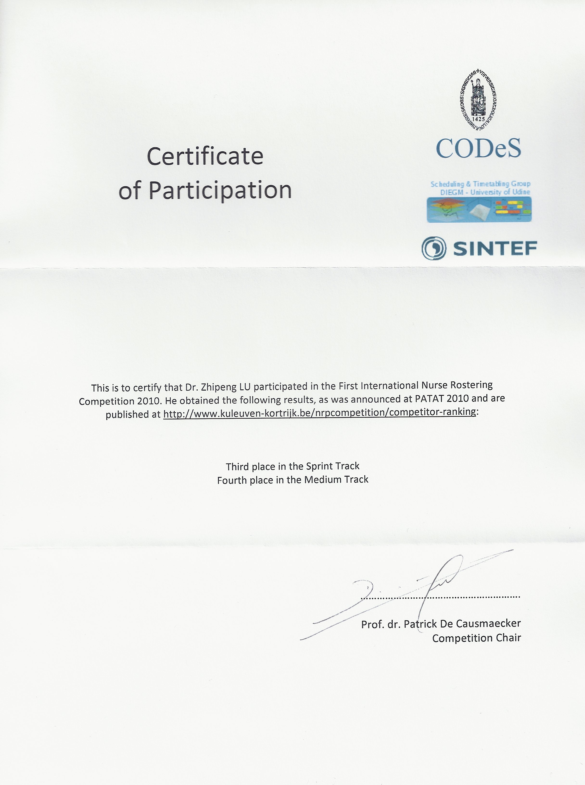
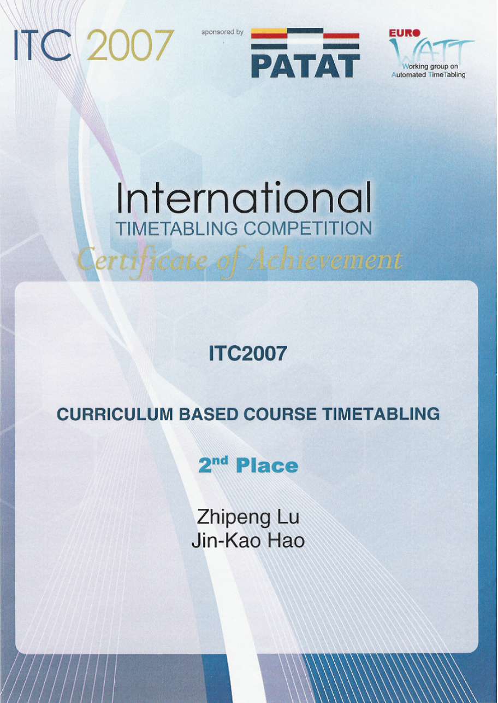
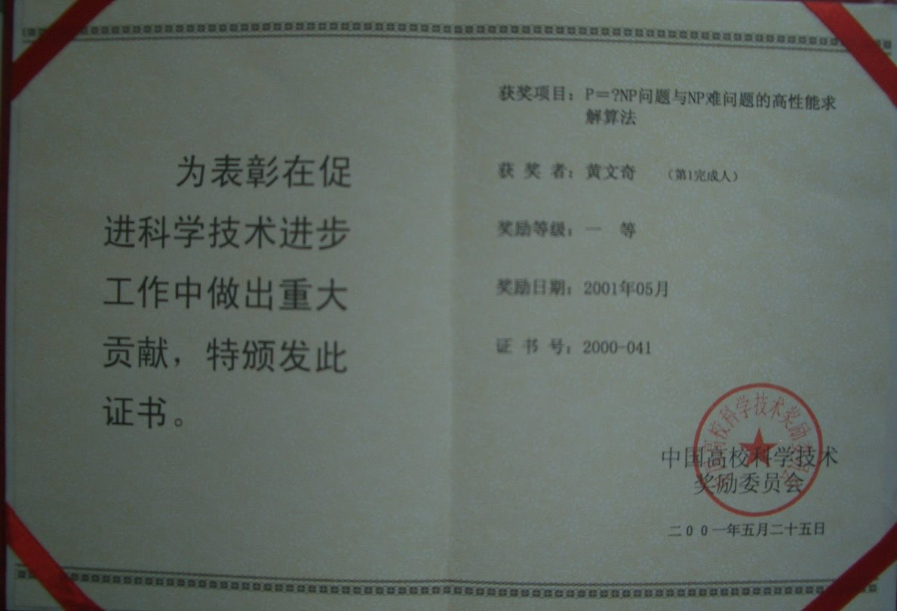

在2010年举行的由比利时鲁汶大学、挪威SINTEF研究所和意大利乌地那大学共同主办的第一届国际护士排班竞赛(International Nurse Rostering Competition, INRC-2010)中，吕志鹏研究员以第一参赛人的身份分别获得了铜奖一项（第一分组第三名）和第二分组的第四名，参赛算法共15个。竞赛排名请参见：http://www.kuleuven-kortrijk.be/nrpcompetition/competitor-ranking。获得金奖的为希腊Patras大学学者，曾承担2004年雅典奥运会人员和车辆的综合调度项目。

吕志鹏研究员在2008年举行的，由欧洲运筹学会时刻表工作组WATT及国际时刻表会议PATAT赞助、由英国皇后大学,卡地夫大学，南皮尔大学，诺丁汉大学和意大利乌地那大学共同主办的第二届国际时刻表竞赛(International Timetabling Competition，ITC-2007)中，以第一参赛人的身份获得银奖一项（第三分组第二名），参赛算法共17个。获得金奖的为美国普杜大学研究员。竞赛排名请参见：http://www.cs.qub.ac.uk/itc2007/winner/finalorder.htm。

地址：中国·湖北省·武汉市·珞喻路1037号·华中科技大学南一楼四楼 邮编：430074 联系电话：027-87543885 登陆入口
本网站由yechao开发维护，如有问题，邮件至 Email: ye_hust@sina.com